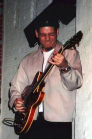
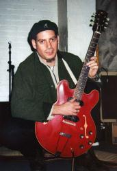
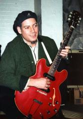
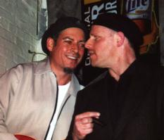

Алекс Шульц: «А почему бы и нет?»
Алекс Шульц: «А почему бы и нет?»
Алекс Шульц: «А почему бы и нет?»
Алекс Шульц: «А почему бы и нет?»Статья Кэти Нортон (Cathi Norton)

После нескольких лет изучения образцов музыки Уэст Коуст и Ист Коуст, я наконец вывела для себя определение разницы между этими стилями. Я как-то сказала своему приятелю: «Характер Ист Коуст можно передать вопросом «Зачем?», а характер Уэст Коуст - вопросом «А почему бы и нет?». Это определение и сейчас мне кажется верным. Поэтому мне было неудивительно узнать, что Алекс Шульц называет Калифорнию своим домом. Этот парень попадает под определение «А почему бы и нет?».Родившись в белой обеспеченной семье из Мэнхэттена в 1954, Алекс рос в нетипичных условиях. Его мама стремительно приобретала международную известность модельера, а приемный отец был большим поклонником джаза. В их доме в Гринвич Виллэдж всегда было полно «художников и авангардистов». Шульц, вспоминая своих родителей, называет их «самыми клевыми из всех, кого я знал». В 10 лет Алекс уже играет на гитаре и слушает современную музыку, от которой также балдеют его молодые родители. К концу шестидесятых, когда разнообразнейшей музыки в Нью-Йорке было с избытком, Алекс имеет возможность слушать все. Знакомство с блюзом произошло, когда он услышал игру Пола Баттерфилда (Paul Butterfield) и Майкла Блумфилда (Michael Bloomfield), открыл для себя Bluesbreakers с Эриком Клэптоном и попал под сильное влияние "B.B. King Live at the Regal". Он пять раз посещал выступления Джимми Хендрикса, впечатляясь его необузданными импровизациями. Отец Алекса играл ведущую роль в его музыкальном образовании. «Он был хитер. Он поощрял все мои музыкальные пристрастия, но чуть позже чрезвычайно своевременно стал подпитывать меня Джанго Райнхардтом, Чарли Крисчэном и Уэсом Монтгомери», говорит Шульц. Алекс быстро прогрессировал в игре на гитаре, а его интерес к джазу становилась все сильней. Однажды после посещения концерта Хендрикса, когда Алексу было 13 лет, его отец указал на сходство музыки Хендрикса с джазом. «Когда мы уходили с концерта, он сказал: «Джимми замечательный джазовый музыкант!». Я говорю «Ты о чем?! Он же не играет джаз!». А он ответил «Ну, это же была импровизация. Он «импровизировал над структурами».
Шульц постепенно оттачивал свою гитарную игру. «Подростком я постоянно участвовал в джемах и играл все лучше. Я знал, что продвигаюсь вперед, но у меня возник стойкий интерес к джазу». В средине семидесятых он был зачислен в музыкальную школу Беркли в Бостоне. Регулярно возвращаясь в Нью-Йорк на выходные и играя в разных поп и рок группах, Шульц вскоре осознал, что в мире есть «миллион гитаристов», и поэтому переключился на бас гитару. Этот ход привел его к неожиданному решению переехать в Лос-Анджелес в 1979. «Казалось, что у нас наклевывался контракт с крупным лейблом», но контракт провалился, и Шульц стал участвовать в разных проектах в качестве приглашенного басиста. «Моя игра не была ослепительной, но неожиданно меня стали приглашать, потому что я играл просто, надежно и с хорошим чувством». Он стал выступать с Хэнком Баллардом (Hank Ballard), Коко Монтойя (Coco Montoya) и Уильямом Кларком (William Clarke). Всякий раз привычка играть на гитаре в перерывах в результате приводила его на место гитариста. Любопытно, что его игра на бас-гитаре сохраняла простоту, в то время как игра на гитаре становилась более импровизационной. И хотя любовь Алекса к блюзу и джазу прослеживается в любой из его инструментальных пьес, похоже, что он способен сдерживаться, не переигрывать, и, руководствуясь сверхъестественным чутьем, играть только то, что строго необходимо.
Играя с Уильямом Кларком, сначала на басу, а затем на гитаре, Шульц обрел родственную музыкальную душу. «Наше музыкальное общение было совершенно естественным. Ему нравилось, как я играю, а я понимал, что делал он. Для меня это очень много значило. У нас был схожий подход к музыке». Работая с Кларком, Алекс объездил все западное побережье, а в 1990 участвовал в записи альбома "Blowin' Like Hell", удостоенного премии W.C. Handy.
Шульц никогда не ограничивался каким-то одним проектом. Играя с Баллардом, он выступал с Кларком, Коко Мантойя, Дебби Дейвис, Стивом Сэмьюлсом и другими. Как правило, у него была одна основная работа по контракту, а остальное время он заполнял разными независимыми проектами. После двух лет работы с Кларком, он занял место гитариста у Рода Пьяццы (Rod Piazza and the Mighty Flyers), место, которое раньше занимал его учитель - Джуниор Ватсон (Junior Watson). По окончании работы с Флаерсами Шульц стал выступать с Лестером Батлером (Lester Butler) вплоть до смерти Батлера в 1998. Сейчас он участвует в независимых проектах по всему миру. Он записывался со своим старым другом Тэдом Робинсоном (Tad Robinson), а среди прочих имен в его дискографии, насчитывающей 25 альбомов, есть Big Joe and the Dynaflows и Бенджи Пореки (Benjie Porecki).
В будущем возможны проекты с Девидом Максвеллом (David Maxwell), Тони Зи (Tony Z), итальянским трио, альбом с джазовым органом и гитарой и очередные работы с Робинсоном и Пореки. «У меня сейчас плодотворный период», смеется он в ответ на вопрос о том, сколько всего он делает одновременно. Он не боится взваливать на себя целый воз. Для него это естественное состояние.

CATHI: Значит ты признаешься, что тебе нравится Эрик Клэптон и Блумфилд с Батерфилдом, да?
ALEX: (Смеется). Ну, здесь я хочу быть честным. Знаешь, в блюзе есть люди, которые говорят: «Я вырос, слушая Вулфа и Мадди», но хочется усомниться: «Да ладно тебе, чувак!». В течение многих лет я не знал, что первый альбом Баттерфилда полностью состоит из хороших интерпретаций песен Литтл Уолтера и Мадди.
CATHI: Значит ты с самого начала увлекся блюзом.
ALEX: Да, сразу же. Как только я услышал Би Би. Я сел и : я понял, что легко могу это повторить.
CATHI: А позже ты сместился к джазу?
ALEX: Да, в семидесятых я был настоящим джазовым снобом. К 17-18 годам я серьезно увлекался Чарли Паркером и бибопом. Но я продолжал играть в Нью-йоркских командах на бас-гитаре. Басисты пользовались большим спросом, чем гитаристы, особенно в блюзе. Я уже довольно хорошо разбирался в блюзе, а до того уже хорошо изучил джаз, так что у меня была солидная гармоническая база. Меня всегда тянуло к басу. Забавно, рок я лучше играю на бас-гитаре, чем на гитаре. Дело в том, что на гитаре у меня все получается в блюзовом духе. В роли басиста я более разнообразен.
CATHI: Потом ты очутился в Лос-Анджелесе. Как ты вошел в тамошнюю блюзовую среду?
ALEX: Выступая со своей первой группой, я всегда поигрывал на гитаре в перерывах. Как-то один парень отвел меня в сторону и сказал: «Забудь эту команду. Тебе надо играть Фредди Кинга!» Меня стали подталкивать к игре на гитаре. Позднее в 81-ом или 82-ом я пошел на блюзовый джем. Там был Коко Монтойя. Он по-настоящему меня поддержал. Тут же я получил хорошие отзывы некоторых из лучших музыкантов. Потом меня стали приглашать, и у меня появилось какая-то уверенность. А на самом-то деле я и представить себе не мог, что смогу сделать карьеру гитариста, потому как я был белым пареньком из обеспеченной семьи, который к тому же еще и петь не умел!
CATHI: Тебе надо было разучить массу блюзовых стандартов, прежде чем это стало происходить?
ALEX: Нет. Я не из тех, кто вдоль и поперек знает Мадди, Соннибоя, Литтл Уолтера и Вулфа. Я просто слушал и играл. Я слушал эти стили и мог имитировать их, но я не был школяром от блюза, я плотно сидел на джазе. Я хорошо знал джаз.
CATHI: Ты и в джазовых клубах бывал?
ALEX: Не в качестве музыканта. Это не моя лига. С блюзом все было иначе - «Ух ты, а я ведь могу это играть вполне прилично, не будучи грамотеем».
CATHI: Но в Лос-Анджелесе ты поначалу в основном играл на басу, так?
ALEX: Да, я стал участвовать в хороших концертах. Первый важный концерт в Лос-Анджелесе был с "Hank Ballard and the Midnighters" в 1985. Я пришел в группу басистом, поиграл немного, а потом Хэнк и ребята услышали, как я играю на гитаре. Всякий раз в перерывах во время репетиций я брал свою гитару. Не то, чтобы мне надоедал бас, просто я люблю гитару. Как-то раз один из гитаристов не явился, и Хэнк сказал: «Ну что, давай-ка найдем нового басиста, а тебя поставим на гитару - ты знаешь, что играть». Так постепенно я перешел на гитару, и после, в течение полутора лет, я был его музыкальным директором.
CATHI: Вот как, ты делал аранжировки?
ALEX: Очень часто. Я был, наверное, самым «ученым» из ребят и мог находить язык со всеми. (Смеется). Они называли меня «Сенатор» - держали меня за дипломата. Я впервые отправился в настоящие гастроли на большом автобусе. Все это впечатляло, а музыка была словно динамит. Я получил замечательный опыт, который дал мне представление о блюзовых кругах. Как, например, когда мы играли в Antone's в 1986.
CATHI: Ты там познакомился с T-birds?
ALEX: Нет, но я познакомился с Джо Саблеттом (Joe Sublett) (саксофонист). Он по-доброму ко мне отнесся. Играть в Antone's было страшно. Все потому, что когда Хэнк в последний раз побывал там, он рассказывал мне: «Какой-то паренек попросился выйти со мной на сцену поиграть, ему нравилось что я делаю». Этим пареньком оказался Стиви Рей Вон! Я видел фото Хэнка со Стиви, Анжелой Стрели (Angela Strehli) и другими известными людьми. А еще я был рьяным поклонником Джимми Вона (Jimmie Vaughan), так что меня трясло от мысли, что кто-то из этих ребят мог там оказаться.
CATHI: (Смеется) Что происходит, если знаменитость оказывается в аудитории? Тебя парализует?
ALEX: Ну да, извини меня, если бы Джимми Вон оказался бы среди зрителей - я бы погиб! Ну, а если кто-либо другой - нет, не проблема. Я просто в совершенном восторге от него. Он великолепен во всем, что он делает: он просто убивает меня. Играя в Antone's, я чувствовал, что это уже не рядовой концерт. Это было здорово.
CATHI: А когда ты работал с Хэнком, ты занимался студийной работой?
ALEX: Немножко. Я начинал, но потом Уильям Кларк взял меня басистом. Я познакомился с Джорджем Смитом (George "Harmonica" Smith). Он был уже в возрасте и не совсем здоров, но он замечательно выступал. С ним на сцене был один молодой белый парень, похожий на байкера, от которого я просто обалдел. Он играл просто удивительно. Тогда я впервые увидел Уильяма Кларка.

CATHI: Я слышала, что Смит был замечателен на сцене.
ALEX: О да, я думаю, именно у него Пьяцца черпает вдохновение.
CATHI: А как Кларк заметил тебя?
ALEX: Он слушал меня и моего друга Стива Сэмьюэлса (Steve Samuels). Он сидел с Хуком Херрерой (Hook Herrera), они были хорошие друзья. В общем Кларк и Херрера сидят в аудитории, два крутых персонажа, глядят на меня. У меня была ужасная прическа а-ля 80-е, я был одет в какие-то нелепые шмотки и я видел, как они говорят обо мне. Я думал, они меня лажают, понимаешь? Но под конец выступления подходит Уильям Кларк и говорит: «Привет, я выступаю в Belly Up Tavern со Смоуки Уилсоном (Smokey Wilson). Хочешь поиграть на басу с нашей группой?» И я подумал «Вот, блин. А я-то думал, он собирался меня пришить!» (Смеется)
CATHI: Я слышала что Билл был жестким человеком.
ALEX: Иногда мог быть таким. Он просто был прямой человек. Мне это не мешало. Он всегда относился ко мне хорошо, с уважением. И я отнесся к его предложению со всей серьезностью. Я по-настоящему пытался играть хорошо, как только мог. Мы общались непринужденно. И у него был вкус к джазу.
CATHI: Холмстром говорил, что у Кларка была мысль сделать джазовую запись незадолго до смерти.
ALEX: Он много слушал исполнителей-духовиков. Вся его концепция состояла в более линейной импровизации. Ну, в итоге, и там я очутился на месте гитариста. Повторилась та же самая вещь, - я попал в группу с черного хода, в роли басиста, а впоследствии получил работу гитариста.
CATHI: Может потому, что твоя игра на гитаре очень эмоциональна.
ALEX: Думаю, это сработало (смеется). То, что я умел, кому-то оказалось нужно. Каждую неделю я ходил на джем, который вел Билл, а однажды он отвел меня в сторону и сказал: «Послушай, я хочу знать, ты согласен играть в моей группе на гитаре?». Вот так вот! Я чуть со стула не упал. У меня закружилась голова, потому что я и впрямь был польщен!
CATHI: Кто у него играл на гитаре в то время?
ALEX: Джоэл Фой (Joel Foy). Джоэл был одним из немногих, игравших на полуакустических гитарах, у кого было представление об игре на гитаре в стиле Уэст коуст. Но, думаю, я немного живее импровизировал в более приджазованных джамповых вещах. Джоэл был парнем с блюзовой школой. Он знал больше традиционных блюзовых вещей, чем я, но я мог просто встать рядом с Биллом и играть вещи в джазовом духе, и ему это здорово нравилось.
CATHI: Я не думаю, что ты можешь обойтись без джазовой составляющей своей игры. Если бы я попросила тебя сыграть ЧИСТЫЙ блюз, тебе бы, наверное, пришлось бы сильно постараться (смеется).
ALEX: Правда, и я не уникален в этом смысле. Я могу хорошо играть, но я не самый крутой парень в районе. Наверное, поэтому с Кларком все получалось так естественно - это была моя ниша, сделанная под меня, как по заказу. Я слушал, что делал Билл и начинал: «Так, я могу вставить тут кое-что в духе Чарли Крисчэна, и будет звучать здорово!».
CATHI: Скажи мне, что ты подразумеваешь под стилем Уэст Коуст? Свинг?
ALEX: Называй, как хочешь, это очень сильно отличалось от того, что делали "Fabulous Thunderbirds" с Джимми Воном, отличалось от Блумфилда, Клэптона, Би Би или Мадди. То, что игралось, представляло собой приджазованный стиль с сильным привкусом джампа.
CATHI: Тебе не сложно было играть с гармоникой? Я говорю не о музыкальном стиле, но требуется определенное умение, чтобы аккомпанировать.
ALEX: Мне пришлось этому подучиться, и я рад, что я так много слушал разных музыкантов. Тэд Робинсон (Tad Robinson) многому меня научил в этом плане. Он был главным харпером в моей жизни (смеется). Он учил меня на Литтл Уолтере и Соннибое.
CATHI: Ты познакомился с ним в Нью-Йорке?
ALEX: Да, наверное, в 1976, через общих друзей, которые настаивали, чтобы мы сошлись. Дома наших родителей находились на Файер Айленде (Fire Island), и друзья буквально привели его в дом моих родителей, сказав: «Алекс Шульц - это Тэд Робинсон, Тэд Робинсон - это Алекс Шульц. Ребята, вы должны познакомиться!» Мы сели и начали играть джем, а спустя 3 часа говорим: «Надо бы передохнуть!» (смеется). Мы моментально сошлись. Он многому меня научил. Он - очень музыкальный парень и совершенно неординарный харпер и певец. Иногда он может звучать как Ким Уилсон, но он намного глубже. Не в обиду Киму, но Тэд обладает бОльшим музыкальным аппетитом, всегда интересуется джазом, фолк и поп-музыкой и всякими другими стилями.
CATHI: Как по-твоему должен гитарист аккомпанировать харперу?
ALEX: Должен играть так, чтобы звучало клево (смеется). Ну, это ответ умника, но в конце концов все сводится к этому. Это сложно объяснить словами. Клевые, жирные аккорды: не просто ритм, а больше акцентов, больше заполнений. Играя с Биллом, важно было придерживаться этого. Он сразу дал мне это понять. Он отвел меня в сторону и говорит: «Когда я оставляю дырку, заполняй ее! Играй что-нибудь, играй что угодно!». Мне удавалось удачно дополнять его фразировку.
CATHI: Здорово, когда я слушала, как ты играл с Тэдом, я больше всего ждала эти места, - ты заполнял их всякими изобретательными фразами!
ALEX: Вот и хорошо! (Смеется). Это то, на что делал акцент Билл. Он всегда говорил: «Парень, что-нибудь, просто играй что-нибудь, врывайся! ЗАПОЛНЯЙ!». А когда Билл говорил тебе, что нужно что-то сделать - ты делал! (Смеется). Иногда в медленном блюзе Билл играл такие длинные фразы, а потом оставлял дырку и притопывал ногой. Именно там ему нужны были акцентные фразы, так что я слушал. Это идет из джаза, где музыканты внимательно слушают друг друга и взаимодействуют. Я ЗАПОЛНЯЛ! Мне нравилась ансамблевая игра. С Биллом это было очень естественно. Мы делали настоящую, естественную музыку. Я мог сыграть сильное соло, но я не хотел быть гитаристом, увлеченным лишь собой и своей сольной игрой; дело было не в том, чтобы быть у всех на виду. Билл и я были настроены на одну частоту; я понимал его фразировку, ее смысл.
CATHI: А ты записывался с Биллом?
ALEX: Да, мы записали "Blowin' Like Hell", который через пару лет вышел на «Аллигаторе». Вилли Бринли (Willie Brinlee) и я собрали основную сумму, необходимую для записи. Мы вовсе не подозревали, что альбом будет издан, не говоря уже о том, чтобы получить в 1990 премию Хэнди (W.C.Handy Award). Если бы кто-то нам об этом сказал тогда, мы бы катались по полу от смеха. Это была наша первая совместная запись.
CATHI: Как долго ты играл у Билла?
ALEX: Около двух лет, с 86-го по 88-ой, некоторое время вместе с Хэнком Баллардом. Дела у Кларка по-настоящему пошли наверх в 88-ом. Мы играли в Сан-Франциско «Дуэль Харперов» ("Battle of the Harmonicas"). Состав был тот же, что и на "Blowin' Like Hell" - Стив Федора (Steve Fedora), Вилли Бринли (Willie Brinlee), Эдди Кларк (Eddie Clark) на барабанах, Билл и я. Мы не были центральной командой в этом шоу, но все было просто чудесно. Все выглядело так, словно дела пойдут в гору. По иронии судьбы Джуниор (Junior Watson) уволился из Флайерсов (Mighty Flyers) две недели спустя. "Blowin' Like Hell" сидели на бобах, работу никто не предлагал, Кларк не мог получить контракт - словом ничего. А потом мне позвонила Хани (Honey Piazza).

CATHI: Ты уже был знаком с Флайерсами?
ALEX: Ну да. Когда я в первый раз приехал в Лос-Анджелес, Тэд посоветовал мне сходить на них - каждый харпер знал Пьяццу. Мой друг Стив Сэмьюэлс (Steve Samuels) повел меня на концерт Флайерсов с Джуниором Ватсоном, и когда я в первый раз их увидел, я ничего не понял. Все было как-то легковесно. В то время я был увлечен Thunderbirds, и Джимми Вон был для меня номер один. Я постоянно вдалбливал Стиву: «Джимми Вон, Джимми Вон, Джимми Вон» (смеется), а он в ответ: «Да ну тебя, вот Ватсон - это да!». Такая у нас шла война. Кроме того, Hollywood Fats был там тогда очень популярен. Я видел его несколько раз с группой Джеймса Хармана (James Harman), когда Кид Рамос (Kid Ramos) и Fats выступали вместе!
CATHI: Ух ты! Ну и как они тебе?
ALEX: Fats мне нравился (смеется)! Fats был крут. Он был круче, чем вся остальная свинговая толпа. Когда он играл джамп, это звучало немного жестче. Fats определенно производил впечатление. В конце концов, Стив убедил меня еще раз сходить на Flyers. Ну, мы пошли, и тут-то Джуниор снес мне башку! Он просто уничтожил меня! Кроме того, именно в тот момент я понял, что тоже могу играть так. Я сказал себе: «Это смесь Чарли Крисчена с Би Би Кингом». Я помню, как стоял и смотрел, что он делал, особенно внимательно в джамповых вещах. Ватсона просто страшно смотреть во время удачного выступления.
CATHI: У меня от него дух захватывает.
ALEX: Да, он эксцентричный музыкант и эксцентричный человек, но когда он в настроении, он обладает совершенно особенным голосом. Он один из тех, кто из необычных составляющих составляет совершенно свой звук. С того самого момента он занял место моего кумира (смеется). Я начал его расспрашивать: «Ого, а это что такое? Как ты это играешь? Где ты это взял?». Он рассказал мне о Тайни Граймсе (Tiny Grimes) и Ти Боун Уокере (T-Bone Walker). Теперь я понимаю взаимосвязь. Нетрудно проследить происхождение, только Чарли Крисчен играл более сложно в смысле гармонии. От Ти Боуна ниточка тянется к Би Би и ко всем остальным. Я стал повсюду следовать за Ватсоном и бессовестно копировать его. Надо сказать, в то время в блюзе не было фигур национального масштаба, за исключением Стиви Рей Вона и, может быть, Роберта Крея. Уэст Коуст был неким культом, чем-то сложным для понимания, чем-то нереальным. Мысль о молодых белых парнях с полуакустическими гитарами, грубо говоря, была ненормальной в то время. Но я немедленно занялся этим, потому что знал, что чувствую эту музыку, и у меня хорошая блюзовая школа. Так или иначе, я оказался на том перекрестке, когда приверженцев этого направления почти не было..
CATHI: Похоже, это было точное попадание - ведь блюз и джаз - твои любимые стили.
ALEX: Идеально точное, в нужном месте в нужное время.
CATHI: Наверное было странно занять место Джуниора у Пьяццы? Тяжело было уходить от Билла?
ALEX: Еще как тяжело! Между ними существовали странные трения. Это было не простое решение, потому с Биллом было здорово, а в музыкальном плане мне ничего другого и желать не нужно было. Мне это было в кайф. Но в плане бизнеса Флайерсы ушли намного дальше. Они два раза в год летали в Европу на гастроли, и это было очень заманчиво. Я подумал: «Ух ты, два раза в год в Европу, да еще и деньги получать за блюз на гитаре? ДА!» Тут и раздумывать нечего было. А получить предложение занять место своего кумира, это вообще было приятным потрясением. НО, мне пришлось долго все взвешивать, потому что я знал, что во многом причиню боль Биллу. Биллу не везло, у него все выходило как-то урывками, а Род был больше бизнесменом. Я должен был принять взвешенное решение, и я колебался целую неделю, но, в конце концов, принял деловое решение.
CATHI: Это так часто случается в музыке, потому что это - очень личная привязанность, но и в то же время - бизнес.
ALEX: Билл был подавлен. Я по-настоящему его любил. Он воспитывал меня в музыкальном и в человеческом плане. Он реально помог мне обрести уверенность. В его команде моя игра значительно улучшилась. Я переговорил с Флайерсами. Они хотели, чтобы я присоединился к команде по окончании Европейского тура, но Ватсон сказал мне, что больше не может и хочет уйти немедленно, поэтому я сказал, что соглашусь, если меня возьмут в тур. Они уладили все формальности, и я поехал.
CATHI: (Смеется). Я говорила со Стьювом (Билл Стьюв, басист Флайерсов), он рассказывал, что когда ты неожиданно появился, он спросил: «Ты что тут делаешь?», а ты ответил «В какой тональности эта вещь?!»
ALEX: (Смеется). Да уж, именно так неожиданно все и было. Мы со Стьювом были друзьями. Мы здорово веселились.
CATHI: Работать с Пьяццой было также легко, как попасть в группу Кларка?
ALEX: Как раз напротив, это был поворот на 180 градусов, потому что Пьяцца намного больше внимания уделяет деталям. Группа исполняла безупречно аранжированные вещи и была очень сыгранной. Именно этим и отличались Mighty Flyers. Род однажды описал мне, как он все видит: «Я пытаюсь показать маленький брильянт тем, кто никогда не видел Литтл Уолтера. Это похоже на маленький брильянт». Красиво сказал.
CATHI: Я говорила со многими музыкантами, работавшими с Пьяццой, и мне кажется, что твое влияние на его группу было несколько иным.
ALEX: Да, на самом деле, я рад, что ты это заметила. К примеру, Рик (Rick Holmstrom) и я - совершенно разные вещи. Он имитирует все эти блюзовые стили, обожает их, относится к ним с почтением. Он в этом весь. А для меня блюз начался немного по-другому - больше с Майкла Блумфилда, Эрика Клэптона и Джона Майалла. Это был уже более городской саунд.
CATHI: Твой саунд отличается более разноплановыми составляющими. Кажется, ты много разного вложил в стиль Алекса Шульца. Этот стиль не похож ни на кого.
ALEX: Вот и здорово. То есть это то, чего должен добиваться любой музыкант. Думаю, это требует времени. Есть молодые ребята, у которых все условия, хороший слух и больше терпения. Они могут засесть и работать. Но мне иногда кажется, с возрастом происходит смешение всей музыки повлиявшей на тебя, и становится как-то комфортнее. Честно говоря, работая с Пьяццой, я чувствовал, что мне надо немного корректировать свою игру. К чести Рода, он давал мне свободу, но иногда я заходил так далеко, как только мог (смеется)!
CATHI: (Смеется) У меня было такое чувство.
ALEX: Да, и Род относился к этому здорово. Он никогда не давил на меня и не говорил: «Слышишь, не играй это!» Это становилось ясно, когда я приближался к границам и говорил с ним об этом. Но он давал мне много свободы.
CATHI: Кажется, он хороший учитель.
ALEX: Да, по крайней мере для меня. Он заставил меня выучить некоторые традиционные стили. Я не был мастером аккомпанимента гармонике, я не владел школами Роберта Локвуда (Robert Jr.Lockwood) или Луиса Майерса (Louis Myers) ну и т.д.
CATHI: Я понимаю, как это тебя ограничивало.
ALEX: Да, но это и дисциплинировало. Выучив все эти традиционные вещи, я понял, что могу это играть. Я не буду соперничать с Расти (Rusty Zinn) или Холмстромом (Holmstrom) по этой части, но я уверенно могу это играть.
CATHI: Образование без математики не обходится.
ALEX: (Смеется) Точно. Это был хороший опыт, но поначалу не очень приятный. Я немного потянул команду в свою сторону, а они меня - в свою.
CATHI: Род как-то сказал мне, что каждый музыкант добавлял что-то свое. Он просто пытался удерживать все в рамках этого жанра.
ALEX: Да, я так это и понял - есть пограничные территории, но нужно уважать общую концепцию Mighty Flyers. Думаю, мое время в этой группе прошло здорово, и мне кажется, мы сделали несколько хороших записей.
CATHI: А что произошло? Ты почувствовал, что должен двигаться дальше?
ALEX: Ну, в-общем, да. Мы работали как маньяки. В этом заключается этика Рода, он человек, который все время работает. Я осознал, что сыграл свою роль настолько, насколько мог ее сыграть. Ну и мне не хватало другой музыки. Это была смесь разных причин.
CATHI: Ты стал играть в другой группе или вернулся к независимым проектам?
ALEX: Я вернулся к независимым проектам. Мне повезло - я осознавал, что не буду голодать, если сделаю такой выбор. Самое большое обязательство по контракту с тех пор у меня было перед Лестером Баттлером ("Red Devils"), и это был КРУТОЙ поворот в левую сторону. (смеется). Играть с очередным харпером мне хотелось меньше всего! Но после работы с "Devils" у него наступил трудный период, и он просто слонялся без дела в Лос-Анджелесе. Он позвонил мне, чтобы узнать, не соглашусь ли я написать несколько песен. Я подумал «Господи, это такой уход влево! Я должен это попробовать!» (Смеется). Это была противоположность джазу. Настоящая задача для меня. Он выявил совершенно иную сторону в моей игре. Он заставил меня играть более агрессивно, он говорил «Громче! Мощнее! Не бойся!». Это было клево, потому что во мне это было совершенно задавлено. Я был «Мистером Эрудитом».
CATHI: Изысканным гитаристом?
ALEX: Точно, спасибо. А это меньше всего было нужно Лестеру. Так мы кое-что записали, и кое-что из того, что мы записали, вошло в альбом. Прошел почти год с тех пор как он умер. Он очень многое для меня значил.
CATHI: Как долго ты работал с Лестером?
ALEX: С июня 1995 вплоть до его смерти в мае 1998. Я делал перерывы, потому что он мог довести меня до изнеможения. Скажем так.
CATHI: Повышенная эксплуатация?
ALEX: Еще какая. Но у меня есть замечательная видеозапись его последнего выступления. Пол Сайз (Paul Size) тоже был там, по иронии судьбы они впервые за пять лет - со времен "Red Devils" - снова выступали вместе. Лестер соблазнил меня двумя большими концертами в Европе, - он сказал, что в обоих будет участвовать Джимми Вон. (Смеется). Я сказал: «Согласен, поехали!» Мы отыграли оба концерта с Джимми, мы знали, что Пол (Сайз) будет на последнем концерте, и договорились, что он появится во время вызова на бис. Все выступление записывалось на пленку и в конце, после того, как Пол присоединился к нам, вышел Джеймс Харман с бутылкой в руке, а вместе с ним - Билли Бранч (Billy Branch) и Джо Луис Уокер (Joe Louis Walker). Они начинают, я передаю Джо Луису свою гитару. Итак, на сцене Джо Луис Уокер, Пол Сайз, Билли Бранч, Лестер, Харман и музыканты из группы Хармана. Это было волшебство. Толпа сошла с ума. Когда они закончили, мы (основная группа) вернулись на сцену и сыграли "Mr.Highwayman", песню "Devil's". Это было самое последнее выступление Лестера. Странно было, что Пол был там. Через шесть дней Лестер умер.
CATHI: Да. Ну а какие у тебя теперь планы, Алекс?
ALEX: Самые разные! По всему миру. Это большей частью джаз. Каждое воскресенье я играю со своей группой и Джерри Эйнджелом (Jerry Angel ("Blasters")) на барабанах. Я называю ее "Combo a-Go-Go", мы играем фанк, джаз и расслабленные вещицы в духе фильмов о Джеймсе Бонде (смеется). Типа саундтреков к порно 70-х годов.
CATHI: (Смеется)
ALEX: Я еще кое-что замышляю с Митчем Кашмаром (Mitch Kashmar). Он певец и Харпер, похож на Тэда. Я работаю с Тэдом столько, сколько могу, а еще обожаю работать с Бенджи (Benjie Porecki). Мы запишем новый альбом. Я запишу свой собственный альбом с великолепными итальянскими музыкантами на ударных и Хаммонде B-3!
CATHI: Господи, вот это состав.
ALEX: Убийственный! А еще я недавно записался с Big Joe and the Dynaflows. Надеюсь, удастся сделать что-нибудь и с другими клавишниками - Дейвом Максвеллом (Dave Maxwell) и Тони Зи (Tony Z).
CATHI: Никаких ограничений, так?
ALEX: (Смеется) Ну, просто здорово играть с самыми разными музыкантами. Это на самом деле замечательно.
CATHI: Переходим к вопросу об оборудовании.
ALEX: (Смеется) Gibson 330 - моя любовь на все времена. Очень универсальный джазовый инструмент. А еще я обожаю Телекастеры. Помню, как-то давно один парень сказал мне: «Представь себе, если бы выпустили специальную гитару для армии - это был бы Телек!» Простота, понимаешь?
CATHI: (Смеется) Аминь - это же ствол дерева. Тут нужны мышцы.
ALEX: Ну, в глубине души - я любитель Gibson.
CATHI: Струны? Тонкие и мягкие?
ALEX: НЕТ, жирные как телеграфный столб.
CATHI: (Смеется) Я так и знала.
ALEX: (Смеется) Настоящий мачо-комплект. И использую 12, 15, 20, 32, 42, 52. Иногда я ставлю на Телекастер одиннадцатые, но во всех других случаях - толстые. Я люблю толстые струны высоко над грифом.
CATHI: Мне интересно, как соотносятся джаз и блюз в твоей игре. Ты можешь сказать, чего в ней больше?
ALEX: Ну, наверное, в моем подходе доминирует блюз, но джаз оказал на меня большое влияние. Наверное, я больше слушал джаз, чем блюз.
CATHI: Ну, Алекс, не знаю что сказать. Как ты себя назовешь - блюзмен, джазмен или еще как?
ALEX: Я дал одному классному трубачу свою визитку. Он взглянул на нее и прочел: «Алекс Шульц, блюзовая гитара и бас». Он сказал, «Чувак, да убери ты эти надписи. Надо просто написать «музыка». Я воспринял это как настоящий комплимент. Так что, думаю, я просто - «музыкант». (Смеется)
CATHI: А почему бы и нет?
Статья и интервью
Cathi Norton
Перевод Арсена Шомахова
Перепечатано из Delta Snake,
оригинал статьи
Фотографии Алекса Шульца вместе с группой B.B. & The Blues Shacks на Blues Shacks Festival 2003, Hildesheim, Germany, 18 октября 2003.